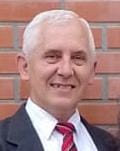

Víctor Neumann

Hello! My name is Victor Neumann, from Salta Argentina. Salta is a beautiful city located in the North West of Argentina, in a valley surrounded by mountains. The climate is temperate and comfortable.
I served a regular mission thirty-seven years ago, to Buenos Aires South Argentina. After returning from the mission I met Virginia Gallo. Later, we married and were sealed to each other in the Buenos Aires Argentina Temple. We have been blessed with six children, four sons and two daughters. Three of them have also served missions. The oldest one is married, and sealed in the Temple, having one child.
Virginia and I serve in our ward, and also as temple workers, every Saturday. We also serve as Service Missionaries in English Connect 3, and pursue careers in BYU Pathway. The career I chose is Web Development.
I enjoy growing a vegetable garden, walking and taking pictures. Those activities help me release the stress from work.